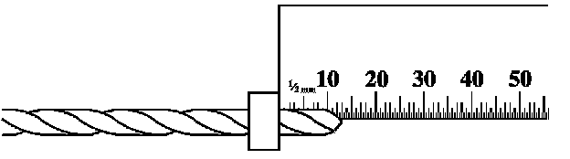
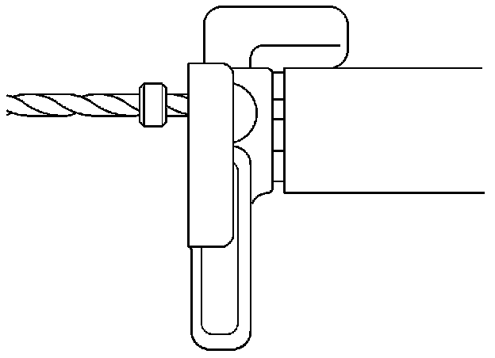
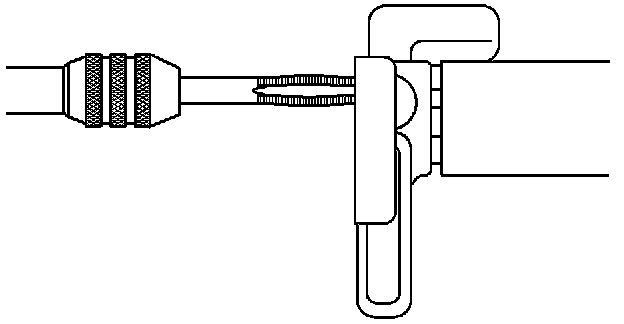
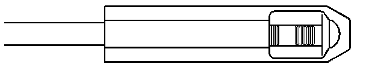
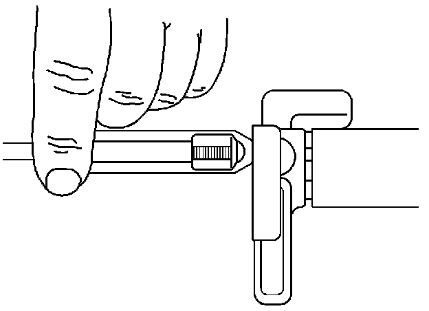
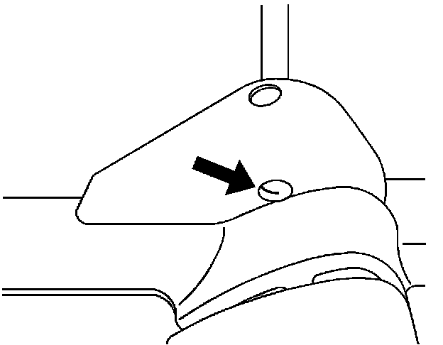
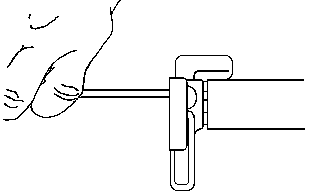
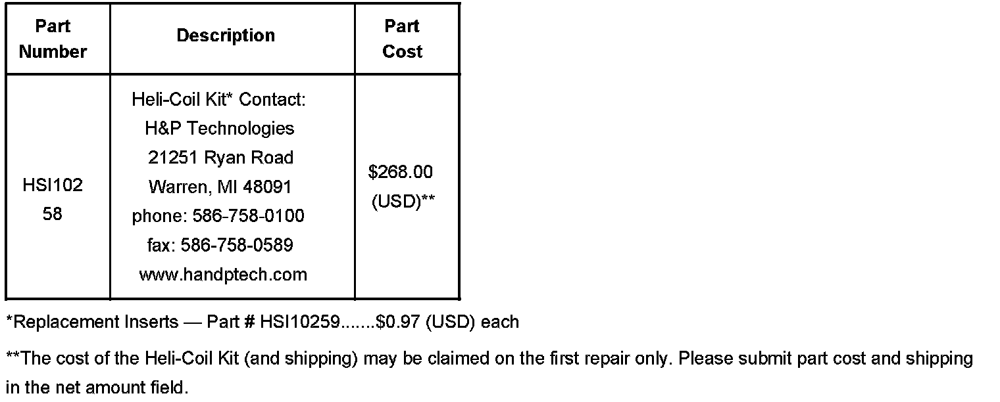
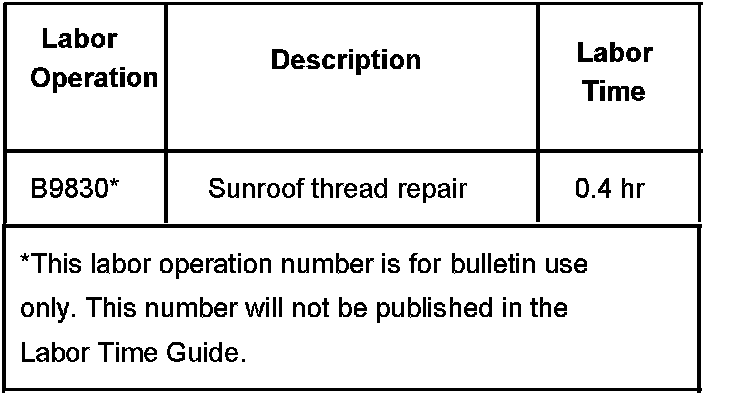

Body - HeliCoil(R) Insert Installation in Sunroof
Bulletin No.: 07-08-67-007Date: September 11, 2007
INFORMATION
Subject:
Installation of HeliCoil Insert When Sunroof Glass Retaining Holes are Stripped Out
Models:
2004-2008 Cadillac SRX
Attention:
Service management should review sunroof glass repair claims to confirm that a workmanship issue did not cause the stripped condition. Stripped threads to the sunroof glass when the sunroof glass was removed within 90 days may have workmanship concerns.
Technicians may find that some of the above vehicles may have sunroof glass retaining holes that are stripped out. The retaining bolts may have been overtorqued when the sunroof was previously reinstalled and inadvertently stripped out.
Procedure
Install a HeliCoil Insert in the stripped out retaining hole in the sunroof.
Remove the sunroof window following SI. Once the glass panel is removed, place the glass upside down on a protected work bench.

Set the drill stop at 14 mm from the drill point to prevent damage on the back side of the hole. Refer to the illustration above.

Drill out the affected threads. Refer to the illustration above. Once the glass panel is removed, place the glass upside down on a protected work bench.

Using the tap supplied with the kit, tap the hole making sure to blow the chips out of the threads. Apply a light lubricant to the tap threads before using. Refer to the illustration above.

Install the insert using the supplied tool. This tool has a prewinder body to guide the insert prior to entrance into the tapped hole. Retract the mandrel and place the insert into the well of the prewinder (tang end towards front of tool). Rotate the mandrel clockwise until the insert is fully engaged with driving contour. Continue to rotate the mandrel until the insert is engaged in one or two threads of the prewinder tip. Refer to the illustration above.

Place the prewinder squarely over the hole. Refer to the illustration above. Rotate the mandrel until the HeliCoil insert is engaged in the tapped hole and continue to rotate until the insert is located 1/4 to 1/2 turn below the work surface. Refer to the illustration above.

The tang on the back of the HeliCoil must be removed for proper bolt insertion. Refer to the illustration above.

Do not attempt to break the tang with pliers as this may damage the tapped hole.
To remove the tang, place the rod into the insert. Strike the rod sharply with a hammer. Refer to the illustration above. Touch-up the backside of the hole if necessary.
Dealers are restricted to the purchase of one kit.
The Heli-Coil SRX repair kit should be purchased from H&P Technologies.
This kit contains enough inserts for 18 repairs. Please return the unused portion to parts for future use.

Parts Information

For vehicles repaired under warranty, use the table.

Disclaimer